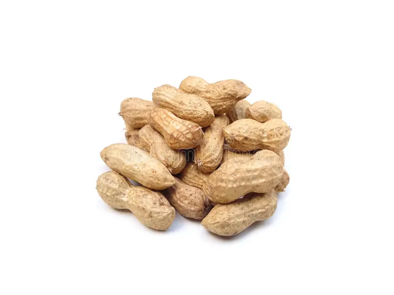

1. Seasons for Growing Groundnut

Groundnut, also known as peanut, is a warm-season crop that grows best in tropical and subtropical climates. It can be cultivated in different seasons based on the region:
- Monsoon: In India and tropical regions, groundnut is usually planted during the monsoon season (June-July) for ideal growth.
- Post-Monsoon: In areas with mild winters, groundnut can be planted after the monsoon for a winter harvest.
- Summer: Groundnut can also be grown during the summer season where irrigation is available.